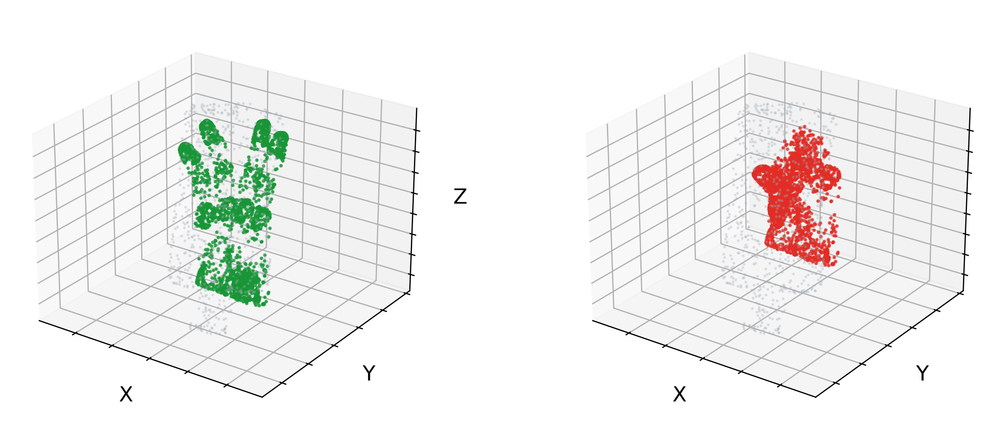
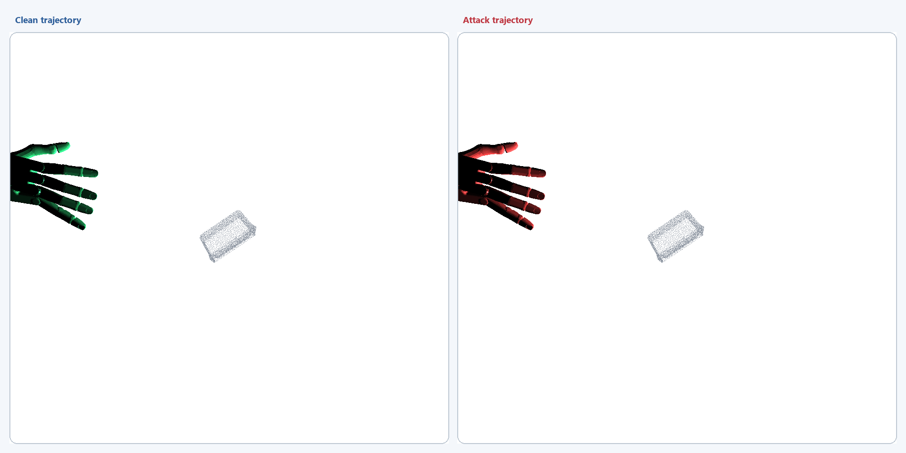
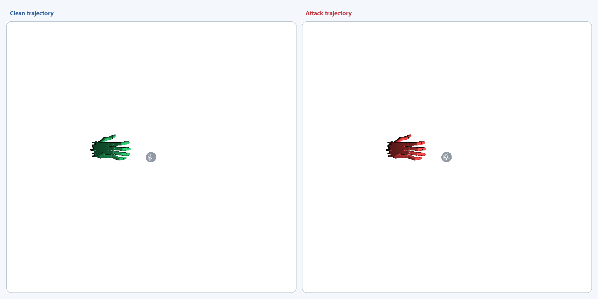
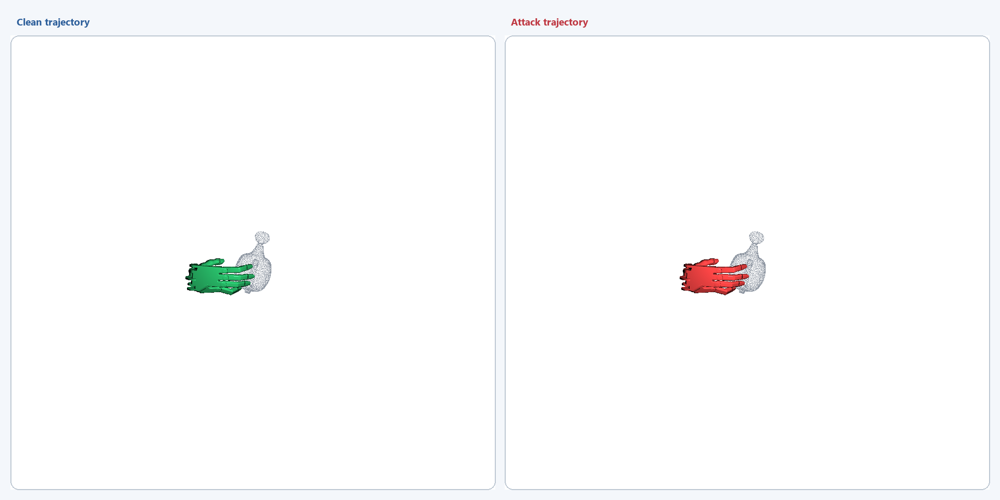
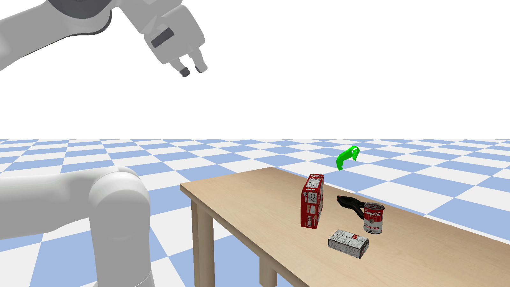

Temporally Consistent Attack (TCA)
An online untargeted attack that manipulates observation history to induce persistent temporal deviations and oscillatory motion.
Anonymous ICLR Submission
Dynamic Dexterous Human-to-Robot Handover (DexH2R) is an important aspect of human–robot interaction. Despite behavior-cloning methods enabling basic trajectory generation and grasping, the safety risks arising from close interaction between humans and robotic hands remain largely unexplored. In this paper, we undertake a comprehensive examination of DexH2R safety concerns by introducing different adversarial scenarios that primarily rely on 3D point clouds: 1) for grasp pose, we design a stealthy trigger to the point cloud of any object, causing the hand joints to collapse and remain closed; 2) for motion generation, we introduce two untargeted online attacks and one targeted offline attack that perturb the spatial position of the dexterous hand, preventing it from approaching the point cloud object. We conduct attacks against pre-trained victim models and introduce evaluation metrics specifically designed to assess attack effectiveness on DexH2R. Extensive experiments show that our attacks substantially reduce task success rates, with reductions of up to 100\% across a range of simulated robotic tasks. Furthermore, evaluations across simulation platforms and against defense mechanisms demonstrate the strong transferability and resilience of our designed attacks.

The left panel of each animation shows the clean motion, while the right panel shows the motion produced under attack. Green and red denote clean and attacked hand trajectories, respectively.
An online untargeted attack that manipulates observation history to induce persistent temporal deviations and oscillatory motion.
An online untargeted attack that perturbs a small set of influential points so that local errors propagate through the predicted trajectory.
An offline targeted attack that uses a compact physical trigger to steer the dexterous hand toward a predefined region.



We further transfer the physical-trigger setting to a different simulator. The clean policy approaches and grasps the target, whereas the attacked policy is redirected along an incorrect path.
